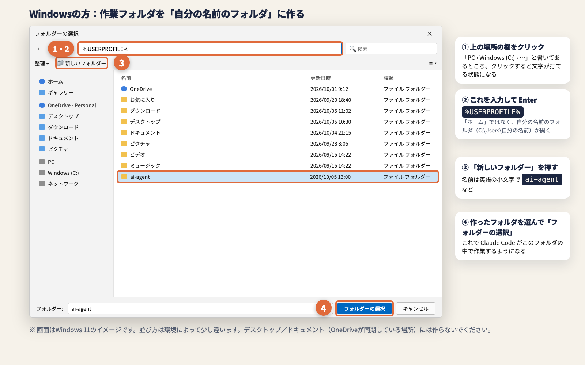

🚀 はじめ方 — URLを貼るだけ
- ホームフォルダ（自分の名前のフォルダ）の中に、空のフォルダを1つ作る（名前の例：
ai-agent） - Codex で、そのフォルダを開く（アプリなら「フォルダを開く」）
- 下の「コピー」を押して、このページのURLを Codex に貼り付けて送信
- あとは Codex の案内どおりに、「許可」や GitHub のボタンを押すだけ
https://ryoya9595.github.io/codex-workspace-setup/setup.md を curl（Windows は curl.exe）で取得して全文を読み（要約ツールではなく原文を読む。作業フォルダには保存しない。ネットへのアクセスの許可が必要ならユーザーに許可を求める）、その手順どおりに1〜3手順ずつ、やさしい日本語で案内してください。インストールやファイル作成の前には、手順書のとおりユーザーの了承を取ってください。AGENTS.md を読む他のAIエージェントも同じように進めてください。
URLを貼ると、この4つが終わります
GitHub とつなぐ準備
必要な道具を入れて、GitHub にログインします。
作業フォルダの中身づくり
AIへのルール（AGENTS.md）、秘密の情報を GitHub に上げない設定、記録用のフォルダを作ります。
非公開の保管場所
GitHub に非公開で保管します。バックアップになり、クラウド版の Codex からも同じフォルダを使えます。
Obsidian の連携
AI秘書の記憶の置き場を整え、Obsidian のインストールから保管庫の登録まで自動でやります。導入したら、開かなくて大丈夫です。
準備 — この3つだけ
- ChatGPT の有料プランで、パソコンの Codex（アプリ・VS Code・ターミナルのどれでも）が使える
- GitHub のアカウントがある（まだの人は github.com/signup から無料で作れます。途中で一緒に作ることもできます）
- ホームフォルダの中に空のフォルダを作って、Codex で開いている
🪟 Windows の方：ホームフォルダの開き方
フォルダを選ぶ画面の上にある「場所」の欄をクリックして、下の文字を入力して Enter を押すと、自分の名前のフォルダが開きます。そこで「新しいフォルダー」を押して作ってください。

URLを貼ったあとの流れ
自分で押すのは、この2か所だけ
🔁 URLを貼っても始まらないとき
Codex がページを読めなかったときは、下のメッセージを「コピー」して、代わりに貼ってください。
📄 Codex が読む手順書（中身を見たい人・うまく読めないとき）
Codex は setup.md を読んで案内します。中身はただの手順書（文章）です。
Codex が「手順書を読めない」と言ったら、下のボタンで保存してから「ダウンロードフォルダの codex-workspace-setup.md を読んで進めて」と送ってください。
⬇ 手順書をダウンロード困ったとき
基本は、エラーの文章やスクショをそのまま Codex に貼れば、原因を調べて直してくれます。
Codex が「手順書を読めない」「ネットにアクセスできない」と言う
ネットへのアクセスが許可されていない可能性があります。許可を求める画面が出たらOKしてください。それでもダメなら、上の「手順書をダウンロード」で保存して、「ダウンロードフォルダの codex-workspace-setup.md を読んで進めて」と送ってください。
ファイルを作るたびに「許可しますか？」と聞かれる
Codex が「毎回確認する」設定になっています。そのままでも使えます（そのつど許可すればOK）。面倒なときは「毎回の確認を減らしたい」と Codex に伝えると、設定の変え方を案内してくれます。
GitHub のリポジトリが「Public（公開）」になっていた
Codex に「作業フォルダのリポジトリを非公開にして」と送れば直してくれます。セットアップの最後にも、Codex が自分で確認します。
Obsidian に何も表示されない
別のフォルダを保管庫として開いている可能性があります。Codex に「Obsidian連携はできていますか？」と聞くと確認して直してくれます。
途中で止まってしまった
同じ作業フォルダを開いた Codex に、このページのURLをもう一度貼って「続きから」と送ってください。終わっているところは飛ばして、続きから案内してくれます。